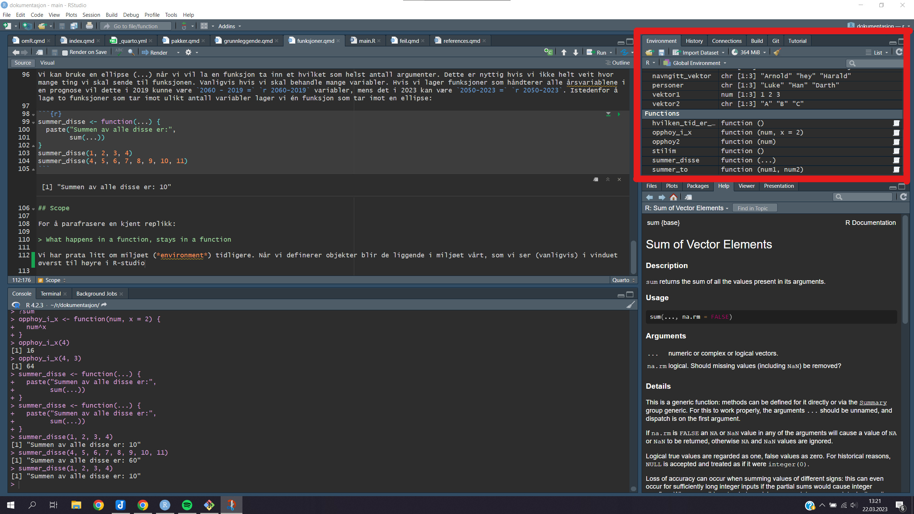

prognose <- hent_prognose(prognose_filsti)
folkemengde <- hent_folkemengde(folkemengde_filsti)
folkemengde <- folkemengde %>%
vask_folkemengde() %>%
summer_folkemengde()
prognose <- prognose %>%
vask_prognose()
sammenstilling <- lag_sammenstilling(prog = prognose, folk = folkemengde) %>%
vask_sammenstilling()
sammenlikning <- sammenstilling %>%
lag_differanser(TR2019)Funksjoner
Det er først når du lærer deg å ta i bruk funksjoner skikkelig at mulighetene til R virkelig starter å utfolde seg. Her skal vi først se litt på hva en funksjon er, og deretter hvordan vi kan lage våre egne funksjoner.
Vi har faktisk allerede brukt masse funksjoner! Det meste i R er enten en funksjon eller et objekt. Eksempler på funksjoner vi har brukt er sum(), data.frame() og til og med c(). Funksjoner tar imot argumenter, og disse argumentene plasseres mellom de to parentesene. Dermed kan vi kjenne igjen en funksjon ved at den har parenteser etter navnet.1 Merk likevel at en funksjon ikke trenger å ta inn noen argumenter. Mange av import-funksjonene jeg har skrevet tar ingen argumenter, de bare returnerer objekter.
En viktig ting som funksjoner lar oss gjøre er å abstrahere oppgaver. Vi sparer tid ved å slippe å gjenta oss. Det er et uttrykk som sier at dersom du oppdager at du skriver det samme tre ganger bør du putte det i en funksjon. tidyverse gir oss mange funksjoner som er tidsbesparende, men noen ganger ofte kan vi gjøre ting lettere ved å lage egne funksjoner.
En annen ting funksjoner lar oss gjøre er å skrive bedre koder. Dette kan dere se spesielt i prognoseevlaueringsskriptene mine. Jeg putter alt av koder inn i funksjoner som jeg putter i en skriptfil. Noen av funksjonene påkaller hverandre. Så har jeg et kort, lite main-skript som påkaller de viktigste funksjonene. Disse funksjonene har lett-forståelige navn slik at du skjønner hva de gjør. La oss kikke kort på den:
Alle disse funksjonene har jeg skrevet sjøl, og når de står sammen slik får vi en historie:
Hent to datasett Begge vaskes, folkemengde blir også summert La en sammenstilling, som består av begge datasetta. Vask sammenstilinga Lag differanseskårer
Det er en kunst å lage bra funksjonsnavn og strukturer, og jeg skal ikke late som jeg er en kløpper i det sjøl.
Anatomien til en funksjon
Funksjonen har et navn og null eller flere argumenter, og den returnerer et objekt. Vi lager den ganske likt som et objekt, ved å assigne det en navn med <-. Vi bruker funksjonen function() for å definere at dette er en funksjon. Og som argument til function() skriver vi navnet på eventuelle argumenter funksjonen vår skal ha. Så putter vi det som funksjonen skal gjøre inni sløyfeparenteser (braces)2.
min_funksjon <- function(argument1) {
# Her skriver vi det funksjonen skal gjøre
}
# Slik påkaller vi funksjonen
min_funksjon(et_argument)# En enkel funksjon:
# Opphøyer et tall i to.
opphoy2 <- function(num) {
num^2
}
opphoy2(4)[1] 16opphoy2(6)[1] 36# En funksjon med to argumenter
summer_to <- function(num1, num2) {
num1 + num2
}
summer_to(4, 6)[1] 10# En funksjon med null argumenter
hvilken_tid_er_det <- function() {
paste("Akkurat nå er tida:", Sys.time())
}
hvilken_tid_er_det()[1] "Akkurat nå er tida: 2023-03-31 15:48:10"Avanserte funksjonstips
Default-verdier
Du kan gi default-verdier til en funksjon. Dette er nyttig der hvor du har en antakelse om hva funksjonen skal brukes til, men du vil ha fleksibilitet til å velge noe annet. Dette vil du se når du bruker andre funksjoner og det gjør at vi slipper å måtte definere alle argumentene i en funksjon. Vi setter en default-verdi slik:
# Sett et argument lik noe for å gi den en default-verdi
opphoy_i_x <- function(num, x = 2) {
num^x
}
opphoy_i_x(4) # opphøyer 4 i 2[1] 16opphoy_i_x(4, 3) # opphøyer 4 i 3[1] 64Dots (ellipse)
Vi kan bruke en ellipse (…) når vi vil la en funksjon ta inn et hvilket som helst antall argumenter. Dette er nyttig hvis vi ikke helt veit hvor mange ting vi skal sende til funksjonen. Vanligvis hvis vi skal behandle mange variabler. Hvis vi lager funksjoner som håndterer alle årsvariablene i en prognose vil dette i 2019 kunne være 2060 - 2019 = 41 variabler, mens det i 2023 kan være 2050-2023 = 27. Istedenfor å lage to funksjoner som tar imot ulikt antall variabler lager vi én funksjon som tar imot en ellipse:
summer_disse <- function(...) {
paste("Summen av alle disse er:",
sum(...))
}
summer_disse(1, 2, 3, 4)[1] "Summen av alle disse er: 10"summer_disse(4, 5, 6, 7, 8, 9, 10, 11)[1] "Summen av alle disse er: 60"Scope
For å parafrasere en kjent replikk:
What happens in a function, stays in a function
Vi har prata litt om miljøet (environment) tidligere. Når vi definerer objekter blir de liggende i miljøet vårt, som vi ser (vanligvis) i vinduet øverst til høyre i R-studio. 
Når det havner her, kan vi henvise til det så mye vi vil, fra hvor som helst (i den samme sesjonen). Hvis vi restarter R-sesjonen vil alt i miljøet forsvinne, fram til vi definerer det igjen.
Funksjoner er annerledes. Det som defineres inni funksjonen vil ikke bli tilgjengelig for miljøet utafor funksjonen. La oss se et eksempel
foo <- 2
en_funksjon <- function() {
bar <- 3
bar * 2
}
foo # Tilgjengelig[1] 2en_funksjon() # Tilgjengelig[1] 6bar # Ikke tilgjengelig - fordi `bar` bare er definert inni funksjonen.Error in eval(expr, envir, enclos): object 'bar' not foundEn måte å dra nytte av denne kunnskapen på, er at du kan holde midlertidige objekter inni funksjonen. Hvis vi ikke trenger den i miljøet vårt kan vi holde den unna, og holde det ryddigere.
Merk at motsatt vei går an: en funksjon veit hva som er i miljøet, siden funksjonen er en del av miljøet. Så vi kan henvise til objekter som ligger i miljøet fra inni en funksjon.
foo <- 2
en_funksjon <- function() {
foo * 3
}
en_funksjon()[1] 6Inspirasjon fra tidyverse
Når jeg lager funksjoner tar jeg inspirasjon fra tidyverse og sørger for at det første argumentet som tas inn er et datasett. Dermed kan vi bruke pipa til å sende datasett fra funksjon til funksjon. Derfor får vi ofte funksjoner som ser slik ut:
vask_datasett <- function(dat = folkemengde, multiplisering) {
dat %>%
rename(nytt_bra_navn = dårlig_gammelt_navn) %>%
mutate(kul_ny_variabel = gammel_variabel * multiplisering) %>%
select(nytt_bra_navn, kul_ny_variabel)
}La oss se litt nøyere på hva som skjer her. Funksjonen vi heter lager vask_datasett(). Den tar inn et argument dat, og et argument multiplisering. dat har jeg forhåndsdefinert, jeg antar at datasettet jeg vil sende til funksjonen heter folkemengde. Hvorfor gjør jeg dette? Hvis jeg veit hva datasettet heter, hvorfor lar jeg meg bruke et annet datasett istedenfor? Fordi jeg ofte ender opp med å bruke funksjonen på flere datasett. Med denne tilnærminga gjør jeg det lettere i framtida. Eller hvis datasettet en gang skifter navn fra folkemengde til folkemengde-2023, for eksempel. Legg merke til innholdet (body) til funksjonen. Det starter med at vi tar datasettet, generisk definert som dat, og sender videre via ei pipe (%>%).
Funksjonen tar også inn et annet argument som jeg ikke har forhåndsdefinert, multiplisering. Dette argumentet må defineres. Jeg forventer at det er tall, for det brukes seinere til å multiplisere en gammel_variabel med.
Slik bruker vi funksjonen vår:
vask_datasett(folkemengde, 3)
# Eller, med pipe
folkemengde %>% vask_datasett(3)
# Hvis vi skal bruke folkemengde som datasett, og siden det er forhåndsdefinert,
# trenger vi strengt tatt ikke en gang å nevne det. Vi kan gjøre slik:
vask_datasett(3)
# Men det er smart å være spesifikk i argumentene man sender, så jeg anbefaler
# at du bruker en av de to første metodene. Det er lett å returnere til dette
# etter noen måneder og glemme at folkemengde er nevnt i funksjonen på det
# siste eksemplet.La oss dykke dypere i dette, med fare for å være overtydelig. Hvordan ville en dårligere funksjon sett ut? Dårligere, fordi den er mindre generisk. Den ville sett slik ut:
vask_datasett_daarlig <- function() {
folkemengde %>%
rename(nytt_bra_navn = dårlig_gammelt_navn) %>%
mutate(kul_ny_variabel = gammel_variabel * 2) %>%
select(nytt_bra_navn, kul_ny_variabel)
}Hovedforskjellen her er er at jeg har fjerna de to argumentene fra funksjonen. Dermed trenger vi ikke legge ved noen argumenter når vi kjører funksjonen. I funksjonens kropp henvises det nå direkte til folkemengde, ikke til noe generisk dat. Og vi multipliserer alltid med 2. Hvis vi vil multiplisere med noe annet må vi gå inn i funksjonen og skrive den om. Hvis vi vil vaske et annet datasett må vi gå inn og endre navnet på det i funksjonen. Det blir mer jobb for oss i framtida og sannsynligheten for at vi gjør noe galt øker. Kanskje ikke så mye, men alle monner drar.
Kanskje har vi ikke bruk for å endre multipliseringsfaktoren eller datasettnavnet akkurat nå. Men det koster oss lite å legge inn denne funksjonaliteten, og det vil potensielt spare oss arbeid i framtida.
Footnotes
Man kan henvise til en funksjon uten å bruke parenteser når man ikke trenger å spesifisere noen av argumentene. For eksempel i dette tilfellet:
vektor1 %>% sum. Jeg anbefaler likevel at du er konsekvent og alltid har med parentesene. Dette er også anbefalt i stilguiden tiltidyverse. Parentesene gjør det lettere å gjenkjenne funksjoner.↩︎Jeg nevner det her, fordi det forvirra meg en stund: Sløyfeparentesene er faktisk ikke nødvendig. De gjør at du kan skrive innholdet i funksjonen over flere linjer. Og vi har nesten alltid funksjoner som går over flere linjer. Dermed vil du nesten alltid se funksjoner med disse parantesene. Om du derimot har en veldig kort funksjon trenger du ikke sløyfeparenteser, da skriver du det bare på samme linje. F.eks. denne korte funksjonen som multipliserer et tall med seg sjøl:
kort_funksjon <- function(tall) tall * tall. Når det er sagt, lær deg å assosiser sløyfeparenteser med funksjoner.↩︎